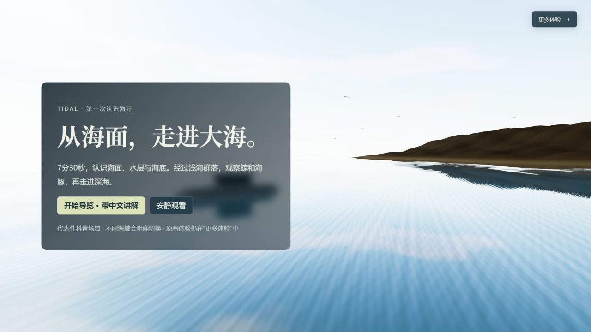
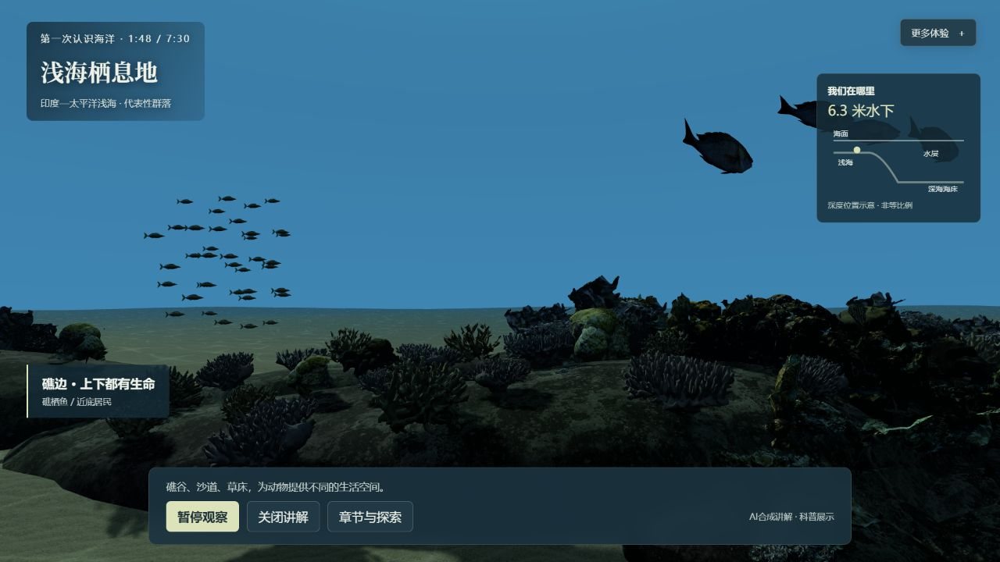
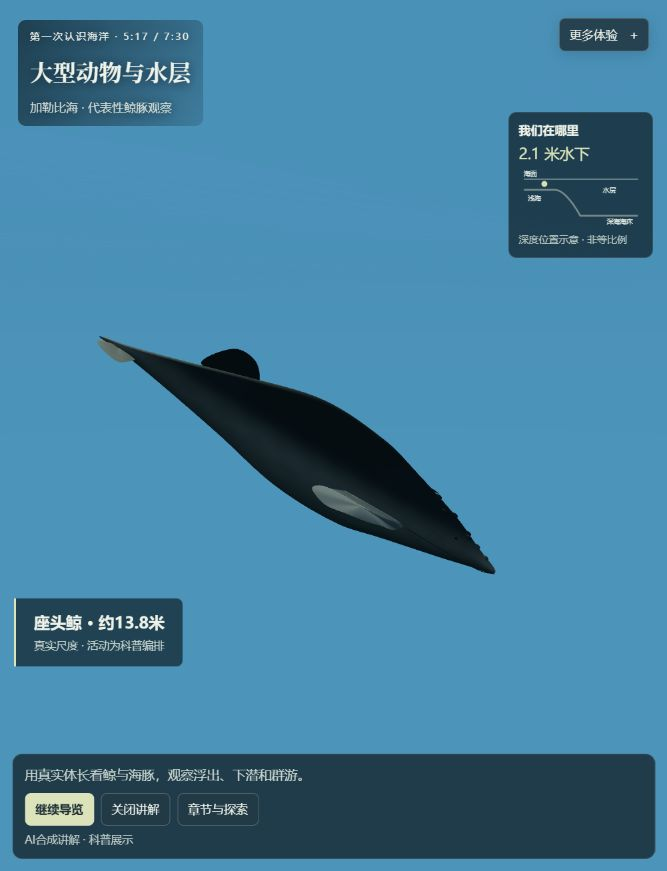
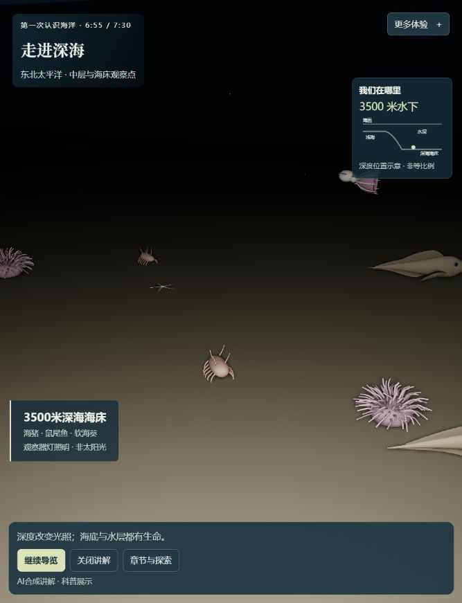

海面与下潜
看见海面、水体和近岸空间

TIDAL · 海洋项目与扩展总览 · 2026.10.14
目标：让没见过大海的人，先理解海面、水体、海床和生命，再走进可探索、可复用的海洋场景。
看见海面、水体和近岸空间

礁谷 → 沙道 → 草床

真实尺度 · 有限姿态与路径联动

光照变化 · 海雪 · 海床群落
空间、光照、生境三个线索
16段中文讲解与字幕
选章、暂停、变速、自由观察
4分钟浅海 · 60秒鱼群 · 75秒样板
研究世界、图鉴与记录工具保留
浅海293个体 / 38展示类别
38条乌尾鮗分流、汇合、受扰与恢复
鲸豚、深海提供代表性观察
展示类别≠精确物种数
远端完整450秒、16段讲解启动
本次无超过250毫秒的长帧
普通缓存加载约17.7秒
模型感、窄窗裁切及旧研究限制保留
总览采用有标注的跨海域与下潜时间压缩。桌面单次结果；人耳试听、手机性能和首次观众理解尚需验收。
沙滩、岩岸、潮线、潮池
岸边浪、水线、折射、浅水沙底
活礁谷、沙道、草床、海带林
大水体、鲸豚、水层鱼群
弱光、海雪、游泳与悬浮动物
软泥、岩缘；候选海山、热液、冷泉
更多场景候选：礁墙与外坡、海峡与洞穴、海山、热液区、冷泉、极地海冰边缘。按地形、海域、水深与可用资料逐段补齐，避免将不同生境的生命混放。
晴天、阴天、雾、雨、雷暴
平静、涌浪、风浪、岸边破浪
清晨、正午、黄昏、月夜
热带、温带岩岸、开阔大洋、极地
先做同一海岸的晴天、阴天、黄昏三种完整状态，再扩雾雨与风浪。当前共享波面和固定光照提供基础，尚没有完整天气系统。
鱼类与鱼群 · 鲸豚与海龟等大型动物
头足类、甲壳类、棘皮动物
珊瑚、海绵、贝类等附着生命
海草、藻体与微小生产者
按海域与活动水层扩展
已有：有限导览与协同演示
未来：邻居、地形、资源驱动的实时决策
未来：有许可与测量信息的观测数据回放
位置、速度、朝向联动身体与鳍尾
现鱼群30Hz预备240秒，非无限实时生态
群游 · 避礁 · 受扰 · 重新聚群
候选：摄食、庇护、清洁、捕食与躲避
后续：繁殖、成长、迁移及长期演化
先做一个完整栖息地
实际事件与科普编排分别记录
保留个体身份、资源、死亡、随机序列与时钟；显示、生态时间和导览进度分开处理。旧恢复失败须明确停止与导出，不靠清空或重生掩盖问题。
移动、碰撞、行动规则、地点目标与进度保存
识别、观察条件、照片记录与反馈
看见现象 → 回答问题 → 得到解释
控制条件、观测状态、重放与对比
镜头编排、配音、字幕、可复现拍摄与导出
环境、物种、行为模块；接口、版本、示例与许可
90–120秒，接上既有浅海
同一海岸三种完整状态
一个群落、两三种行为联系
一处生境与代表性生命
一个玩法、任务与可保存结果
背景与章节图均取自当前阶段07真实画面；未来场景、天气、物种行为与玩法是规划，不用理想化效果图替代已实现内容。
素材来源与署名：yydshly.github.io/ocean-world/assets/shallow-artist/credits.html